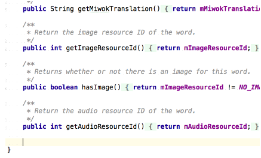
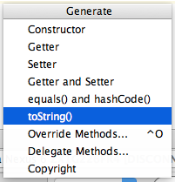
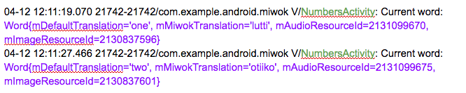

15. The toString() Method (Optional)
The toString() Method (Optional)
Current State of the Code
If you skipped the previous nodes and are re-joining us, welcome back! At this point, your app should play the corresponding audio file when you click on each word. Congratulations on getting the feature working! You can compare your code with the latest version of our code on GitHub.
Debugging Tip
Before we continue with the rest of the app, I would like to provide a quick debugging tip, if you didn’t already know it.
You can use log statements to figure out the state of any Java object. The easiest way to print out the contents of a Java object is to provide an implementation of toString() method. The purpose of this method is to represent the whole object as a string, usually for debugging purposes.
Word Class Example
Let me show you an example with the Word object. Within the Word class, override the toString method.
1) Put your cursor in an empty space in the file (that is outside of the existing methods, but still within the class).
See example:

2) Then use a keyboard shortcut to automatically “Generate a method (Getters, Setters, Constructors, toString, etc..)”. On Windows, the keyboard shortcut is ALT + Insert. On Mac, the keyboard shortcut is CMD + N.
3) You should see this dialog pop-up. Select toString().

4) Accept the default choices by hitting OK.
5) This toString() method will be automatically generated by Android Studio and added to your Word class. The method concatenates a bunch of variables and text, in order to print out all the variables in your Word class as a string. As you can see, the return value of the method is a single String.
/**
* Returns the string representation of the {@link Word} object.
*/
@Override
public String toString() {
return "Word{" +
"mDefaultTranslation='" + mDefaultTranslation + '\'' +
", mMiwokTranslation='" + mMiwokTranslation + '\'' +
", mAudioResourceId=" + mAudioResourceId +
", mImageResourceId=" + mImageResourceId +
'}';
}6) Then whenever you have a Word object, such as within the onItemClick() method of the OnItemClickListener, you can print out the Word object to the logs.
// Set a click listener to play the audio when the list item is clicked on listView.setOnItemClickListener(new AdapterView.OnItemClickListener() {
@Override
public void onItemClick(AdapterView<?> adapterView, View view, int position, long l) {
// Get the {@link Word} object at the given position the user clicked on
Word word = words.get(position);
Log.v("NumbersActivity", "Current word: " + word);
// Create and setup the {@link MediaPlayer} for the audio resource associated with the current word
mMediaPlayer = MediaPlayer.create(PhrasesActivity.this, word.getAudioResourceId());
// Start the audio file
mMediaPlayer.start();
}
});Note: If you concatenate (with the “+” operator) a string with a Word object, then Java will implicitly call the toString() method on the object. That means, these two statements are equivalent:
Log.v("NumbersActivity", "Current word: " + word);
OR
Log.v("NumbersActivity", "Current word: " + word.toString());
7) Then in the Android logcat, you will something like this output. I highlighted the log tag in green font color (NumbersActivity), and I highlighted the return value of the Word toString() in purple font color.

To summarize, we’ve just covered how you can override the toString() method of any class, which is optional. However, it’s a helpful practice because in the future, you may want to print the current state of an object to the logs (instead of using the step-by-step debugger in Android Studio).